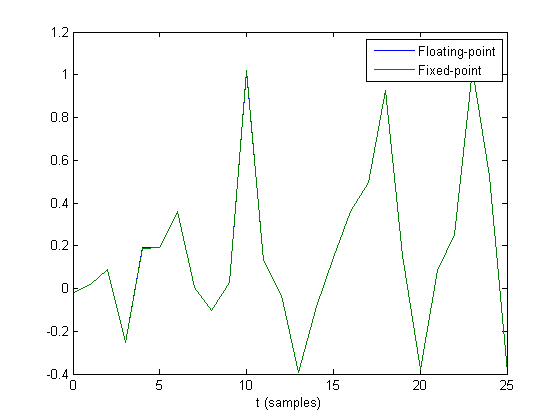
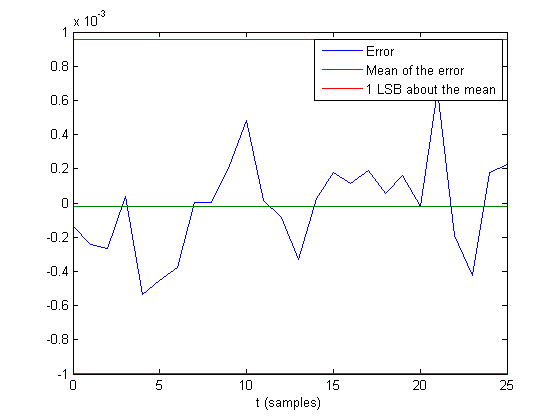
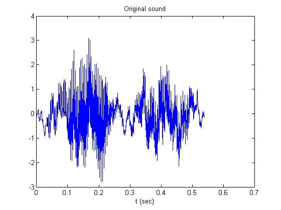
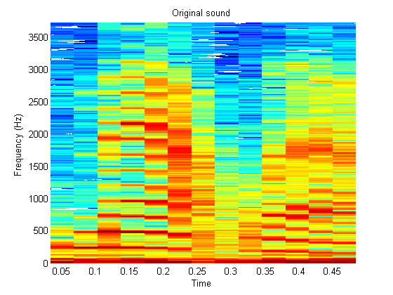
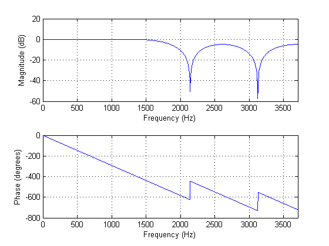
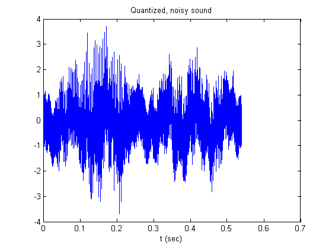
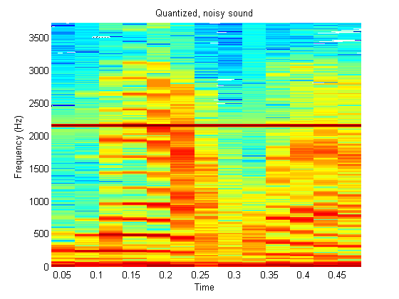
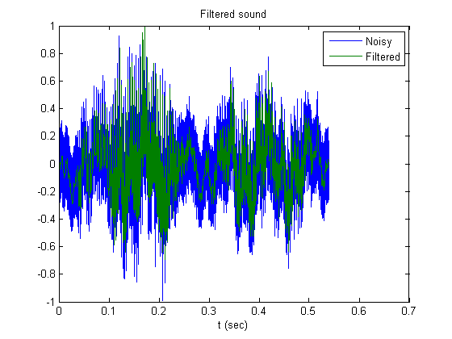
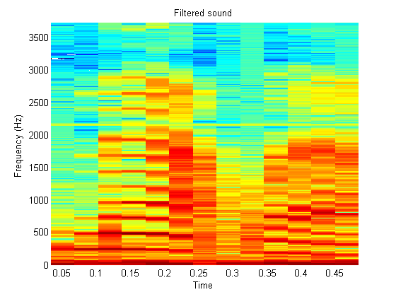

Fixed-Point C Development
This demo shows how to use the parameters from a fixed-point MATLAB® program in a fixed-point C program.
Contents
- Getting the Right Parameters
- MATLAB Algorithm
- C Algorithm
- Use Fixed-Point Math Options to Automatically Choose Best Scaling
- First, Try the Algorithm in Floating-Point MATLAB
- Run the MATLAB-file with Floating-Point Parameters
- Define the Word Lengths
- Configure Fixed-Point Math Parameters to Keep Least-Significant Bits
- Define the Fixed-Point Variables
- Compute the Fraction Length of the Output
- Run the Same MATLAB-file. This Time It's Fixed-Point Because the Inputs Are.
- Plot the Floating-Point and Fixed-Point Side By Side
- Plot the Error
- Define Integer Parameters to Pass to C
- Let FI Tell Us the Numeric Type of the Inner-Product
- Run the Fixed-Point C Filter
- Compare FI to Fixed-Point C. It is Bit Faithful!
- Filter a Long Signal with the C Program
- Plot the Sound Over Time
- Spectrogram of the Sound
- Quantize and Listen
- Frequency Response of the Moving-Average Algorithm
- Add Noise
- Quantize the Noisy Sound and Listen
- Plot the Sound Over Time
- Spectrogram of the Sound. Notice the Dark Line at 2140 Hz.
- Set Up the Fixed-Point Parameters as Before
- Filter in C With the Same Parameters as Before and Listen
- Plot the Original and the Filtered Signals Together
- Spectrogram of the Sound. Notice the Dark Line at 2140 Hz is Gone.
- Take it for a Spin!
- Try 8-bit Data
- Try 4-bit Data
- Examine the C File
- Compiling the MEX File
- Information About Compiling MEX Files
- Modify a Copy of the C Algorithm
Getting the Right Parameters
Finding the right parameters in a fixed-point C program can be difficult. Fixed-Point Toolbox™ makes this easier.
MATLAB Algorithm
Suppose we have the following simple algorithm in MATLAB. It computes the running average of its input x using a weighting vector b, which has been given to us.
Note that the output y, is also used as an input parameter so that y can be aware of its data type.
function [y,z] = fi_m_fir(b, x, z, y) for k=1:length(x); z = [x(k);z(1:end-1)]; y(k) = b*z; end
C Algorithm
We have translated the MATLAB function into this C function, and we need to figure out a number of things. How do we scale the integer inputs b, x, and z so they retain maximum precision? Will there be overflow when we run data through it? We are using native integer data types, but what if I have, say, 12-bit data? Which bits of the 16 are the 12-bits of data stored in? How do I compute the values of accOneHalfLSB and accShift that are used to round the 32-bit accumulator and shift into the 16-bit output?
void fi_c_fir(int16_T *b, int16_T *x, int16_T *z, int16_T *y,
int nb, int nx, int nz,
int32_T accOneHalfLSB, int accShift)
{
int32_T acc;
int k;
int i;
for (k=0; k<nx; k++) {
memmove(z+1,z,sizeof(int16_T)*(nz-1));
z[0] = x[k];
acc = 0;
for (i=0; i<nb; i++) {
acc += (int32_T)b[i] * (int32_T)z[i];
}
y[k] = (acc + accOneHalfLSB) >> accShift;
}
}Use Fixed-Point Math Options to Automatically Choose Best Scaling
The answer to all of the above questions is: Define the word lengths of the variables and let fi automatically compute the binary points. We will go through the process of defining variables and math options in the following example.
First, Try the Algorithm in Floating-Point MATLAB
The low-pass FIR filter coefficients are given to us.
b = fi_fir_coefficients;
Random data for test.
rand('state',0);
N = 2*length(b);
x0 = 2*rand(N,1)-1;
z0 = zeros(length(b),1);
y0 = zeros(size(x0));
Run the MATLAB-file with Floating-Point Parameters
yfl = fi_m_fir(b, x0, z0, y0);
Define the Word Lengths
The attributes of our fixed-point parameters have been set up in this example so that we can set the word lengths and let fi figure out the best scaling for the fraction lengths (binary points) in the data, in the product register, in the sum register (accumulator), and there is even a convenient function to compute the numeric type of the output of this algorithm that will retain best precision in the output and at the same time guarantee that no overflows occur.
Of course, we can always go in and fully specify all these scaling parameters ourselves, but then every time we changed any word length, we would have to go through and adjust all the other parameters too.
It is hard to overstate how much work this saves us. If we want to change the simulation to use 8-bit coefficients and 8-bit data, we just need to change those word lengths. If the data is given to us as integers, or as floating-point values, the best scaling is used to store the data, and then the scaling of all related computations are changed automatically.
In the following, we are saying "effective word length" because when we get to the C program, the data are stored in 16-bit integers, and the product and sum are stored in 32-bit integers. However, the MATLAB-file fixed-point algorithm will use the effective word lengths as specified for any value from 2 to 65535 bits. The C algorithm will act as though those are the actual word lengths from 2 to 16- and 32-bits, respectively. This is very convenient for simulating fixed-point algorithms on your desk top computer that will run on an embedded device with word lengths different than the standard 8, 16, and 32 bits.
Wb = 12; % Effective word length of the coefficients, b Wx = 12; % Effective word length of the data, x Wy = 12; % Effective word length of the output, y Wprod = 32; % Effective word length of the product (int32_T)b[i] * (int32_T)z[i] Wacc = 32; % Effective word length of the sum stored in int32_T acc
Configure Fixed-Point Math Parameters to Keep Least-Significant Bits
We configure so that the products and sums keep the least-significant bits (KeepLSB), and the overflow mode is wrap, as it is in C.
F = fimath('ProductMode', 'KeepLSB', ... 'ProductWordLength', Wprod,... 'SumMode', 'KeepLSB', ... 'SumWordLength', Wacc,... 'OverFlowMode', 'wrap',... 'Roundmode', 'nearest');
Define the Fixed-Point Variables
bfi = fi(b, 1, Wb, 'fimath', F); xfi0 = fi(x0, 1, Wx, 'fimath', F); zfi0 = fi(z0, numerictype(xfi0), 'fimath',F);
Compute the Fraction Length of the Output
Compute the number of integer bits necessary for no overflow in the inner product b*z. Then leave that much head room in y.
y_fractionlength = Wy - innerprodintbits(bfi,zfi0);
yfi0 = fi(y0, 1, Wy, y_fractionlength, 'fimath', F);
Run the Same MATLAB-file. This Time It's Fixed-Point Because the Inputs Are.
yfi0 = fi_m_fir(bfi, xfi0, zfi0, yfi0);
Plot the Floating-Point and Fixed-Point Side By Side
Note that the lines in the plot overlay each other. If you are running this program, and have stopped at this point, you can zoom in on the graph and see that the values are slightly different.
t = 0:length(y0)-1; plot(t,yfl,t,yfi0);set(gcf,'color',[1 1 1]); legend('Floating-point','Fixed-point') xlabel('t (samples)')
Plot the Error
Plot the error and compare with the scaling of the least-significant bit of the fixed-point value centered around the mean of the error.
err = double(yfi0) - yfl; m = mean(err); delta = double(lsb(yfi0)); tlim = [0 t(end)]; plot(t,err,tlim,[m m],tlim,m-delta*[1 1],'r',tlim,m+delta*[1 1],'r') set(gcf,'color',[1 1 1]); legend('Error','Mean of the error','1 LSB about the mean') xlabel('t (samples)')
Define Integer Parameters to Pass to C
Our C program is expecting 16-bit signed integers, so we cast to that specific type.
bint = int16(bfi); xint = int16(xfi0); zint = int16(zfi0);
Let FI Tell Us the Numeric Type of the Inner-Product
In particular, we need to know where the binary point is so that we will know what part of the accumulator to pluck the output data from.
acc = bfi*zfi0; numerictype(acc)
ans =
DataTypeMode: Fixed-point: binary point scaling
Signedness: Signed
WordLength: 32
FractionLength: 23
Run the Fixed-Point C Filter
yint = fi_c_fir(bint, xint, zint, acc.fractionlength, y_fractionlength);
Compare FI to Fixed-Point C. It is Bit Faithful!
[int16(yfi0) yint int16(yfi0)-yint]
ans =
-19 -19 0
19 19 0
89 89 0
-258 -258 0
194 194 0
195 195 0
369 369 0
3 3 0
-104 -104 0
28 28 0
1042 1042 0
135 135 0
-33 -33 0
-404 -404 0
-87 -87 0
147 147 0
371 371 0
506 506 0
950 950 0
160 160 0
-388 -388 0
85 85 0
258 258 0
1049 1049 0
536 536 0
-401 -401 0
Filter a Long Signal with the C Program
Now that we're fairly confident that our C program is doing the right thing, let's do something useful with it.
Load a sound file and listen to it. Also see if the Signal Processing Toolbox™ is available so we can analyze these signals later.
isSignalToolboxAvailable = license('test','Signal_Toolbox'); load fidemomtlb x = mtlb; n = length(x); t = (0:n-1)'/Fs; soundsc(x,Fs)
Plot the Sound Over Time
plot(t,x) set(gcf,'color',[1 1 1]); xlabel('t (sec)') title('Original sound')
Spectrogram of the Sound
if isSignalToolboxAvailable spectrogram(x,512,256,512,Fs,'yaxis'); set(gcf,'color',[1 1 1]); title('Original sound') end
Quantize and Listen
xfi = fi(x,1,Wx); soundsc(double(xfi),Fs)
Frequency Response of the Moving-Average Algorithm
Let's take a look at the frequency response of the moving average filter defined by vector b. Notice that there is a null in the frequency response at about 2140 Hz. This means that any sound at 2140 Hz will be averaged out if it is run through the moving-average algorithm. The 2140 Hz frequency is relative to the sampling frequency, Fs, that was used when the sound was recorded.
if isSignalToolboxAvailable freqz(b,1,1024,Fs); set(gcf,'color',[1 1 1]); end
Add Noise
Since my algorithm will filter out any signal at 2140 Hz, let's add a sinusoid at that frequency to the original signal and see if we can filter it out with our fixed-point moving-average algorithm written in C.
N = length(x); noise = sin(2*pi*2140*(0:n-1)'./Fs); xnoisy = x + noise;
Quantize the Noisy Sound and Listen
xfi = fi(xnoisy,1,Wx); soundsc(double(xfi),Fs);
Plot the Sound Over Time
plot(t,xfi) set(gcf,'color',[1 1 1]); xlabel('t (sec)') title('Quantized, noisy sound')
Spectrogram of the Sound. Notice the Dark Line at 2140 Hz.
if isSignalToolboxAvailable spectrogram(double(xfi),512,256,512,Fs,'yaxis'); set(gcf,'color',[1 1 1]); title('Quantized, noisy sound') end
Set Up the Fixed-Point Parameters as Before
zfi = fi(zeros(length(b),1), numerictype(xfi), 'fimath',F);
acc = bfi*zfi;
y_fractionlength = Wy - innerprodintbits(bfi,zfi);
Filter in C With the Same Parameters as Before and Listen
Can you still hear the noise signal? Can you tell any other differences in the sound?
xint = int16(xfi); yint = fi_c_fir(bint, xint, zint, acc.fractionlength, y_fractionlength); soundsc(double(yint),Fs)
Plot the Original and the Filtered Signals Together
If you are running this demo and have paused at this section, zoom in on the plot. Can you see the high frequency noise in the original signal? Can you see that it has been smoothed out in the filtered signal?
Notice that the filtered signal has been delayed in time. Can you tell by how much? How is the time delay in samples related to the length of b?
The signals are scaled to make them easier to compare.
xscaled = double(xint); xscaled = xscaled/max(abs(xscaled)); yscaled = double(yint); yscaled = yscaled/max(abs(yscaled)); plot(t,[xscaled yscaled]) set(gcf,'color',[1 1 1]); legend('Noisy','Filtered') xlabel('t (sec)') title('Filtered sound')
Spectrogram of the Sound. Notice the Dark Line at 2140 Hz is Gone.
if isSignalToolboxAvailable spectrogram(double(yint),512,256,512,Fs,'yaxis'); set(gcf,'color',[1 1 1]); title('Filtered sound') end
Take it for a Spin!
Open this demo in the MATLAB editor by typing
edit fi_c_developmentdemo.m
from the MATLAB command line.
Then, go back up to the top and modify the word length parameters and step through the code using "cell mode" in the editor.
Try 8-bit Data
Execute these lines, then start stepping through the code again starting just below where they were defined as 16-bit data.
Wb = 8; % Effective word length of the coefficients, b Wx = 8; % Effective word length of the data, x Wy = 8; % Effective word length of the output, y Wprod = 32; % Effective word length of the product (int32_T)b[i] * (int32_T)z[i] Wacc = 32; % Effective word length of the sum stored in int32_T acc
What was the error like? What did it sound like?
Try 4-bit Data
Execute these lines, then start stepping through the code again starting just below where they were defined as 16-bit data.
Although 4-bit data sounds scratchy, the filter is still effective and you can hear the speech.
Wb = 4; % Effective word length of the coefficients, b Wx = 4; % Effective word length of the data, x Wy = 4; % Effective word length of the output, y Wprod = 16; % Effective word length of the product (int32_T)b[i] * (int32_T)z[i] Wacc = 16; % Effective word length of the sum stored in int32_T acc
What was the error like? What did it sound like?
Examine the C File
The C file is located in the same directory as the MATLAB-file. You can open it by typing
edit fi_c_fir.c
from the MATLAB command line.
Compiling the MEX File
If you have MATLAB configured for a C compiler, you can compile this file by typing
mex fi_c_fir.c
from the MATLAB command line.
Information About Compiling MEX Files
For more information on compiling mex files, type
doc mex
from the MATLAB command line.
Modify a Copy of the C Algorithm
The implementation of the algorithm in C that we are using in this demo was done for clarity: its structure is very much like the algorithm in MATLAB. Can you modify the C algorithm so that it runs faster?